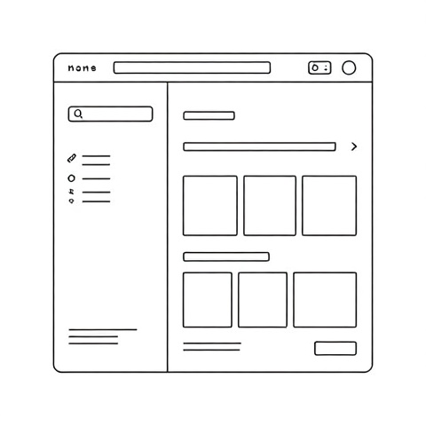
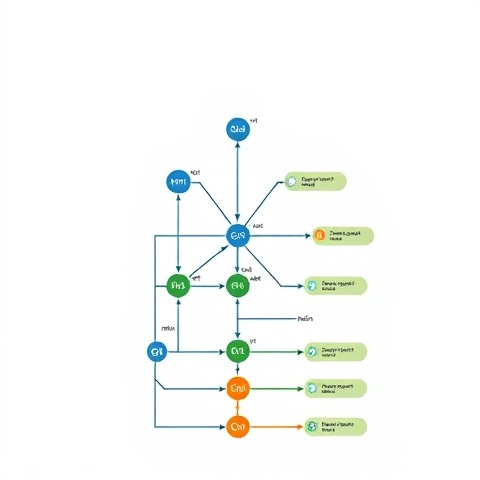

What is the purpose of a README file?
A README file provides essential information about a project, including its purpose, how to install and use it, and any other relevant details. It serves as documentation for developers and users.
READ MOREA README file provides essential information about a project, including its purpose, how to install and use it, and any other relevant details. It serves as documentation for developers and users.
READ MORE
A wireframe is a visual guide that represents the skeletal framework of a website. It focuses on layout, content placement, and functionality without design elements.
READ MORE
In Git, a branch is a separate line of development that allows you to work on new features or fixes without affecting the main codebase.
READ MORE